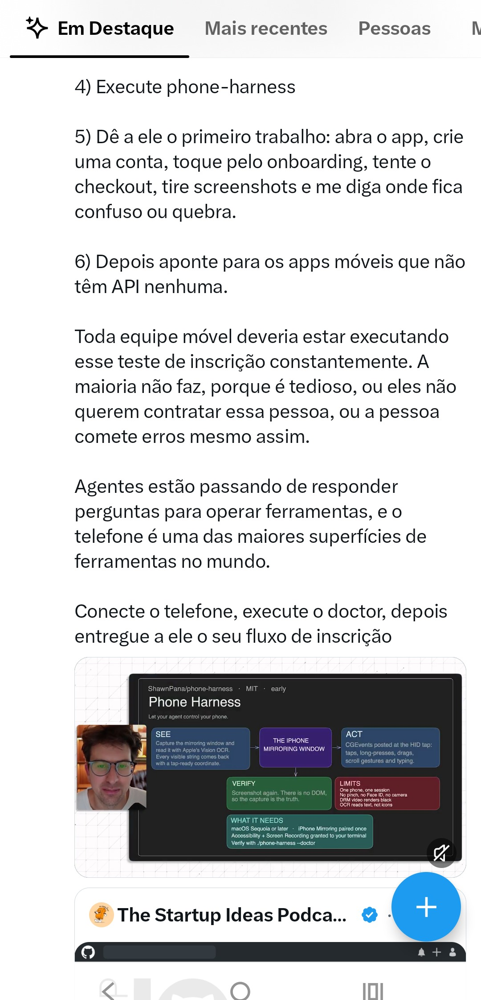
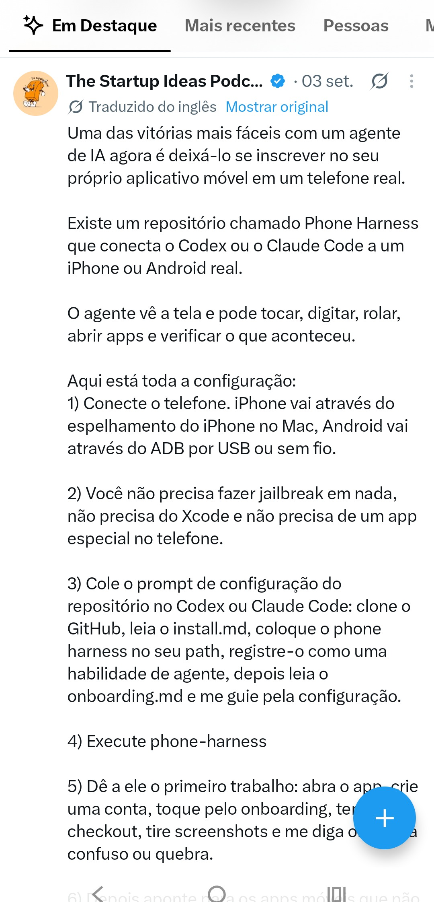
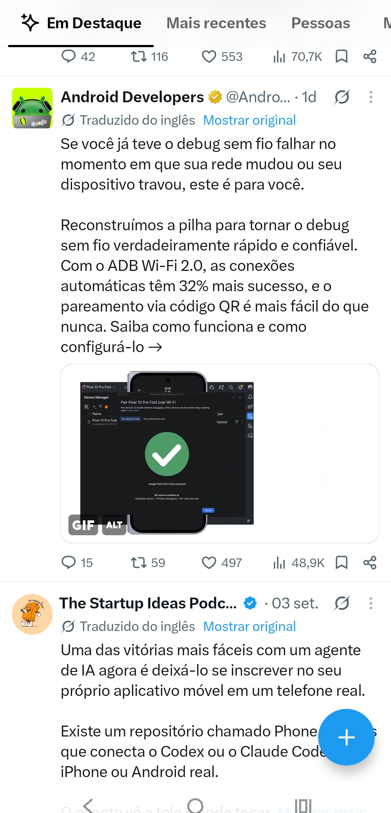
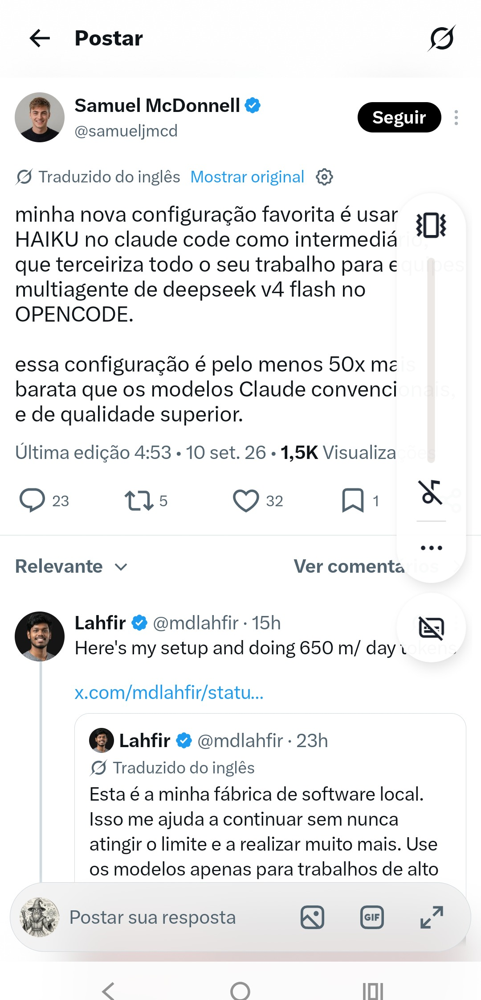
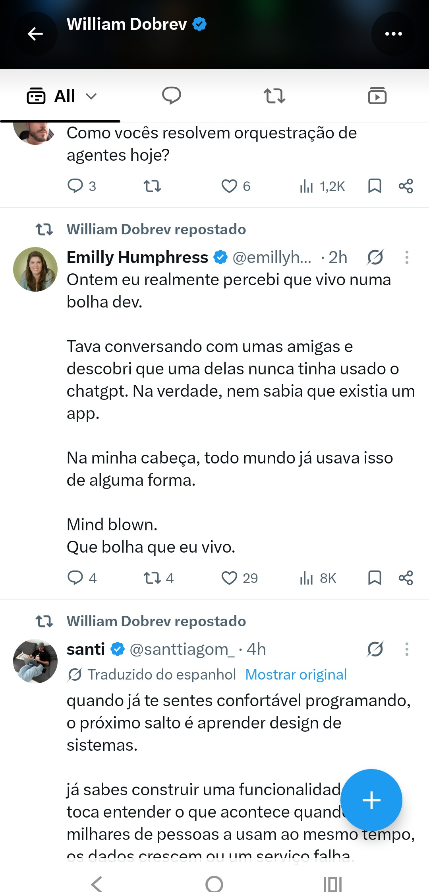
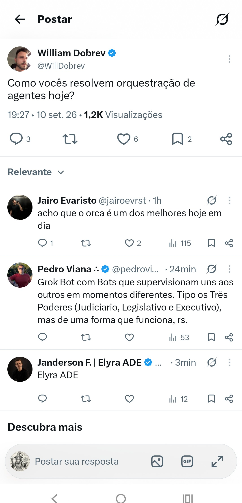
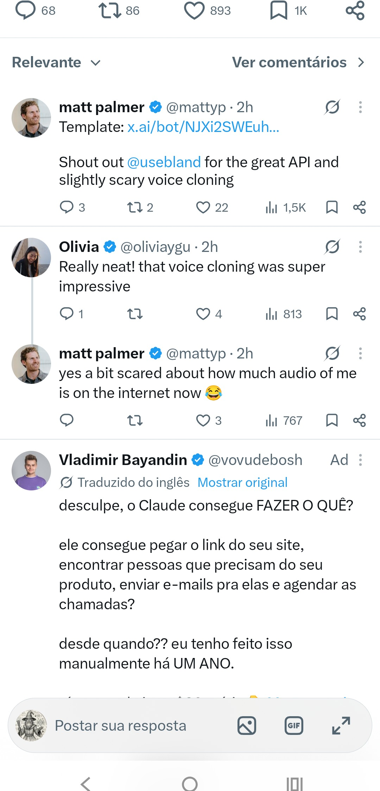

Phone Harness: faça seu agente testar seu checkout como usuário real

Tempo real
📸 Screenshot_20260910-205937.X.png
“Passo 4-6: abra o app, crie conta, tente checkout e diga onde quebra. Toda equipe móvel deveria rodar esse teste.”
● Siga: Deixe a IA se inscrever no seu próprio app em um telefone real — Phone Harness conecta Codex/Claude Code ao iPhone/Android real. Vê tela, toca, digita, rol → 10/09 20:59
IA didatico 10/09 20:59
Deixe a IA se inscrever no seu próprio app em um telefone real
“Phone Harness conecta Codex/Claude Code ao iPhone/Android real. Vê tela, toca, digita, rola e verifica.”
@startupideaspod • 10/09 20:59 • #twitter, #github, #gringa atualizado 2026-09-10

VPS tecnico 10/09 20:59
ADB Wi-Fi 2.0: 32% mais sucesso e QR pairing que realmente funciona
“Android Developers reconstruiu a pilha de debug sem fio. Conexões automáticas 32% mais confiáveis.”
@AndroidDev • 10/09 20:59 • #twitter, #github, #gringa atualizado 2026-09-10

Hacking tecnico 10/09 20:58
android-remote-control-mcp: controle Android via MCP com ADB e dump XML
“Server MCP que dá Hi root, dump XML da tela, AirTap via ADB. Token + controle total do Android via Agent.”
@LawrenceW • 10/09 20:58 • #twitter, #github, #gringa atualizado 2026-09-10
IA provocador 10/09 20:56
Meu setup 50x mais barato: HAIKU terceiriza tudo pro DeepSeek v4 Flash no OpenCode
“Claude Code com HAIKU como intermediário que joga trabalho pro multiagente DeepSeek v4 Flash. Qualidade superior.”
@samueljmed • 10/09 20:56 • #twitter, #llm, #gringa atualizado 2026-09-10


IA didatico
Bolha dev: amiga nunca usou ChatGPT e nem sabia que existia app
@emillyh • 10/09 20:55
atualizado 2026-09-10
atualizado 2026-09-10

IA provocador
Orquestração de agentes hoje: ORCA, Grok Bot e os 3 Poderes que funcionam
@WillDobrev • 10/09 20:55
atualizado 2026-09-10
atualizado 2026-09-10

Automacao provocador
Claude consegue pegar seu site, achar clientes, enviar email e agendar chamadas?
@vovabesh • 10/09 20:54
atualizado 2026-09-10
atualizado 2026-09-10

IA didatico
Grok Bot pode fazer qualquer chamada que você faz: demo ao vivo + transcrição
@mattyp • 10/09 20:54
atualizado 2026-09-10
atualizado 2026-09-10

Prints originais exibidos como imagem da matéria — toque pra ampliar. OCR tesseract moto g84
10 notícias
10 NO AR
atualizado 2026-09-11T00:22